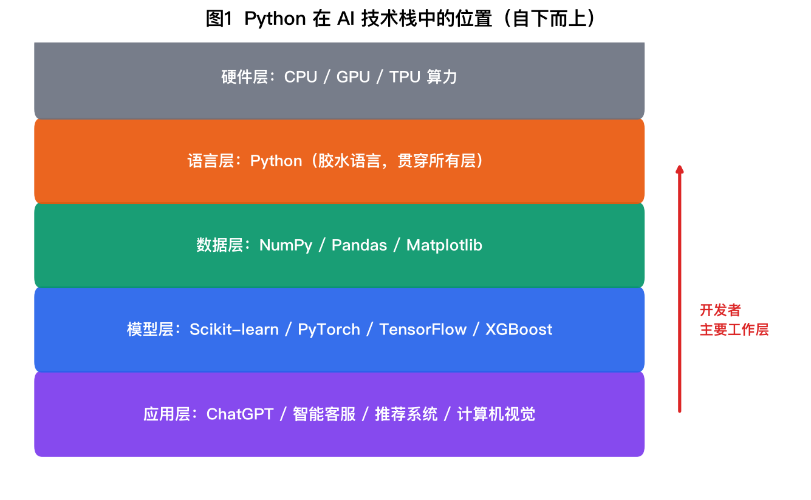
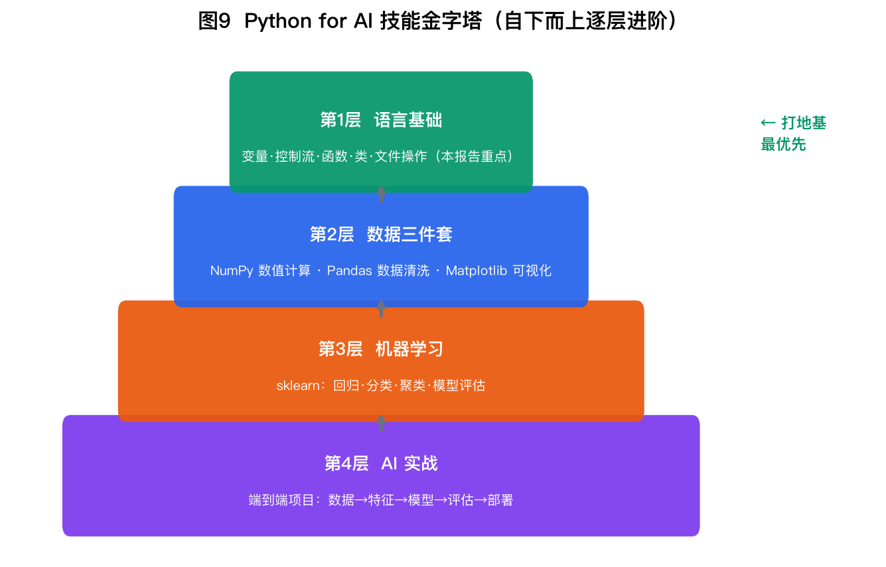
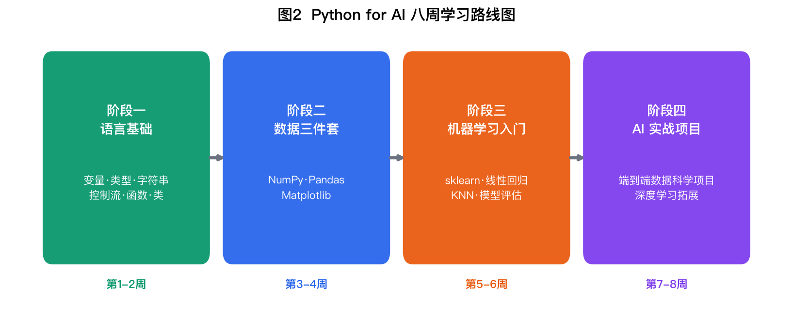
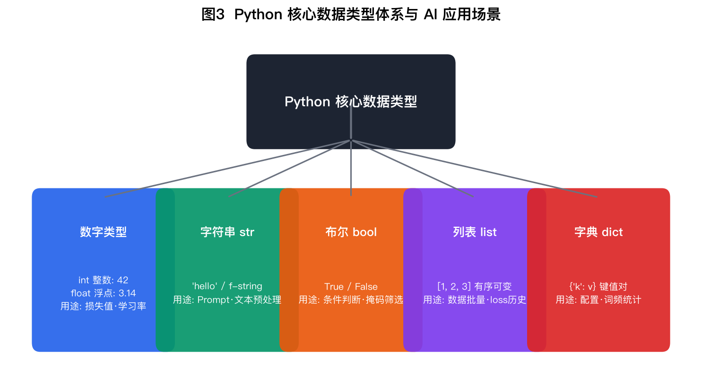
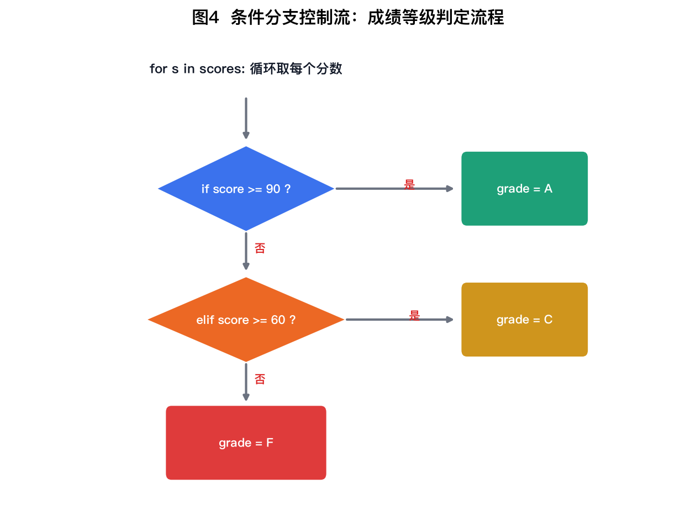
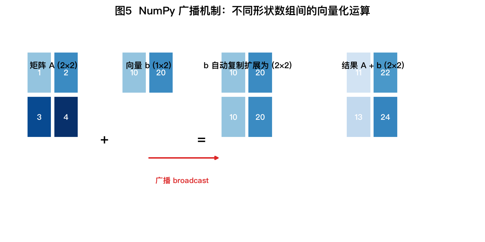
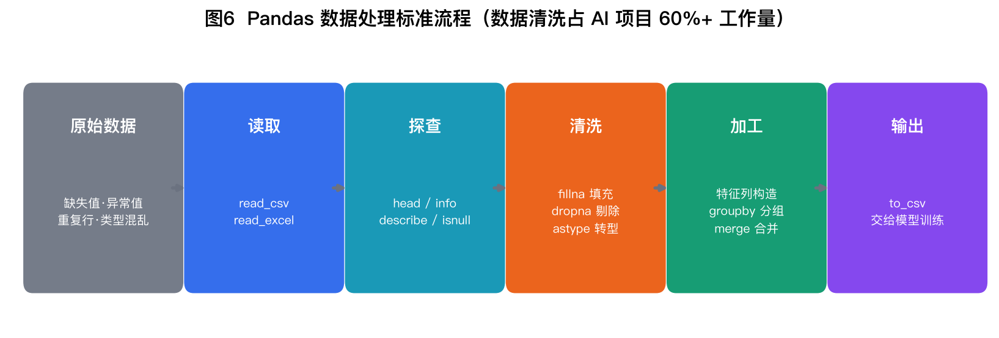
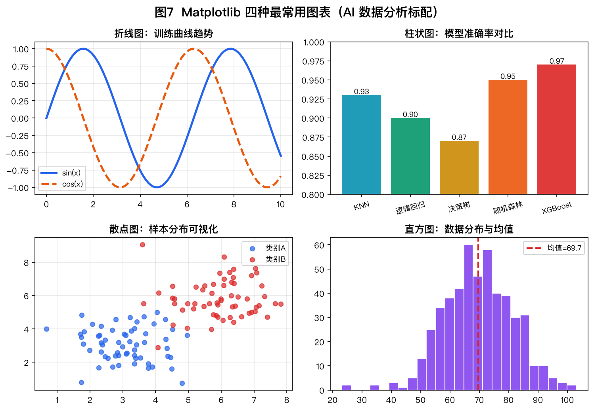
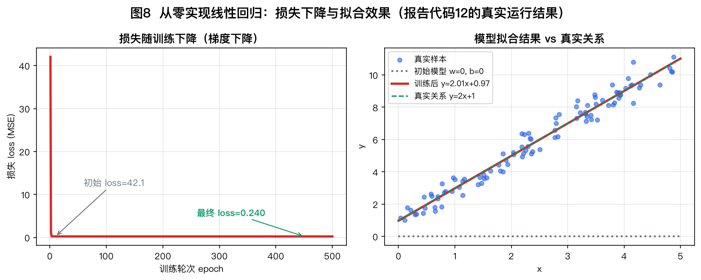
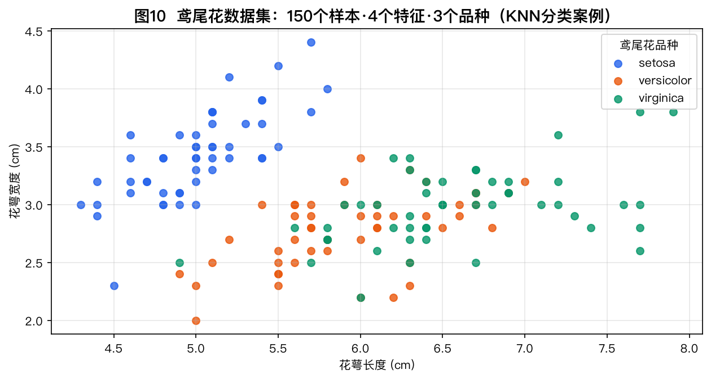

无论你后续要学习机器学习、深度学习、大语言模型（LLM）应用还是数据科学，Python 都是事实上的标准语言。 它语法接近自然语言、上手门槛低，同时拥有全世界最庞大的 AI 生态：训练模型用 PyTorch、处理数据用 Pandas、 调用大模型 API 用官方 SDK——全部是 Python 优先。可以说：不会 Python，就很难亲手做出任何 AI 系统。


初学者强烈推荐 Anaconda 发行版：它一次性装好 Python + NumPy/Pandas/Matplotlib/scikit-learn 等常用库， 并自带 Jupyter Notebook——一个"写一段、跑一段、立刻看到结果"的交互式编程环境，是数据科学与 AI 课程的标准工具 （本课程的实训环节也全部基于 Notebook）。
| 工具 / 命令 | 作用 | 说明 |
|---|---|---|
| conda create -n ai python=3.11 | 创建独立虚拟环境 | 每个项目一个环境，避免包版本互相冲突 |
| conda activate ai | 激活环境 | 激活后终端提示符前会出现 (ai) |
| pip install 包名 | 安装第三方库 | 如 pip install numpy pandas scikit-learn |
| jupyter notebook | 启动 Notebook | 浏览器自动打开，Shift+Enter 运行当前单元格 |
| python xxx.py | 运行脚本 | 适合写成文件的大型程序 |
建议按以下四个阶段推进，每阶段约两周。原则是：先打语言地基，再学数据处理，最后用真实案例把知识串起来。 每学完一个知识点，务必亲手把本报告对应的代码敲一遍并改几个参数观察变化。

变量无需声明类型，赋值即创建。AI 编程中最常用的四种基本类型如下：

# 1. 第一个程序：向 AI 世界问好
print("Hello, AI World!")
print("人生苦短，我用 Python")
Hello, AI World! 人生苦短，我用 Python
# 2. 变量与四大基本类型 age = 20 # int 整数 score = 92.5 # float 浮点数 name = "小明" # str 字符串 is_student = True # bool 布尔值 print(age, type(age)) print(score, type(score)) print(name, type(name)) print(is_student, type(is_student))
20 <class 'int'> 92.5 <class 'float'> 小明 <class 'str'> True <class 'bool'>
AI 应用中大量文本处理（Prompt 拼接、日志输出、数据清洗）都依赖字符串操作，f-string 是最推荐的格式化方式：
# 3. 字符串操作：AI 提示词(Prompt)拼接实战
model = "GPT-4"
task = "情感分类"
prompt = f"请你扮演NLP专家，使用{model}完成{task}任务"
print(prompt)
text = " Python是AI时代的必修语言 "
print("原始长度:", len(text))
print("去空格:", text.strip())
print("替换:", text.strip().replace("必修", "核心"))
print("分割:", "loss,accuracy,f1".split(","))
请你扮演NLP专家，使用GPT-4完成情感分类任务 原始长度: 20 去空格: Python是AI时代的必修语言 替换: Python是AI时代的核心语言 分割: ['loss', 'accuracy', 'f1']
模型训练时的 loss 历史曲线、一批样本的特征值，都用列表存放。切片 lst[a:b]、 负索引 lst[-1] 是必须熟练的技能：
# 4. 列表：批量管理数据
losses = [0.9, 0.6, 0.4, 0.3, 0.25]
print("训练损失:", losses)
print("列表长度:", len(losses))
print("最后一个epoch损失:", losses[-1])
print("前3个epoch:", losses[:3])
losses.append(0.22) # 尾部追加
print("追加后:", losses)
print("最小损失:", min(losses), "平均损失:", sum(losses)/len(losses))
训练损失: [0.9, 0.6, 0.4, 0.3, 0.25] 列表长度: 5 最后一个epoch损失: 0.25 前3个epoch: [0.9, 0.6, 0.4] 追加后: [0.9, 0.6, 0.4, 0.3, 0.25, 0.22] 最小损失: 0.22 平均损失: 0.445
词频统计、模型配置、API 返回的 JSON 结果，本质都是字典。dict.get(k, 默认值) 可以安全地读取不存在的键：
# 5. 字典：AI 文本词频统计实战
text = "AI 改变世界 Python 支撑 AI AI 依赖数据 数据 驱动 AI"
words = text.split()
freq = {}
for w in words:
freq[w] = freq.get(w, 0) + 1
for word, count in sorted(freq.items(), key=lambda x: -x[1]):
print(f"{word}: {count}次")
AI: 4次 改变世界: 1次 Python: 1次 支撑: 1次 依赖数据: 1次 数据: 1次 驱动: 1次
if / elif / else 做分支判断，for ... in ... 遍历序列—— 这是写任何自动化逻辑的基本骨架。下图与代码演示"逐个学生成绩评级"的完整流程：

# 6. 条件与循环：批量评定学生等级
scores = [95, 82, 67, 58, 74]
for s in scores:
if s >= 90:
grade = "优秀(A)"
elif s >= 80:
grade = "良好(B)"
elif s >= 60:
grade = "及格(C)"
else:
grade = "不及格(F)"
print(f"分数 {s} -> 等级 {grade}")
分数 95 -> 等级 优秀(A) 分数 82 -> 等级 良好(B) 分数 67 -> 等级 及格(C) 分数 58 -> 等级 不及格(F) 分数 74 -> 等级 及格(C)
列表推导式把"循环 + 条件 + 变换"压缩成一行，是 Python 最具特色的语法，数据分析中随处可见：
# 7. 列表推导式：一行代码完成特征变换
temps_c = [15.2, 18.6, 21.3, 24.8, 27.1]
temps_f = [c * 9 / 5 + 32 for c in temps_c] # 摄氏 -> 华氏
high_days = [c for c in temps_c if c > 20] # 筛选高温日
print("华氏温度:", [round(f, 1) for f in temps_f])
print("高于20度的天数:", high_days)
华氏温度: [59.4, 65.5, 70.3, 76.6, 80.8] 高于20度的天数: [21.3, 24.8, 27.1]
函数用 def 定义，支持默认参数、返回多值。AI 项目里"评估一个模型"这类逻辑 写一次、处处调用：
# 8. 函数：封装可复用的模型评估逻辑
def evaluate(y_true, y_pred, verbose=True):
"""计算准确率"""
correct = sum(1 for t, p in zip(y_true, y_pred) if t == p)
acc = correct / len(y_true)
if verbose:
print(f"样本数={len(y_true)}, 预测正确={correct}, 准确率={acc:.1%}")
return acc
y_true = [1, 0, 1, 1, 0, 1]
y_pred = [1, 0, 0, 1, 0, 1]
acc = evaluate(y_true, y_pred)
print("返回值:", acc)
样本数=6, 预测正确=5, 准确率=83.3% 返回值: 0.8333333333333334
类（class）把数据（属性）和行为（方法）打包。sklearn 的所有模型都是类： model.fit() 训练、model.predict() 预测。 下面自己动手写一个最简单的"线性模型"类，提前体验这种设计：
# 9. 类与对象：一个极简"线性模型"
class LinearModel:
def __init__(self, w=0.0, b=0.0): # 构造方法
self.w = w
self.b = b
def predict(self, x): # 实例方法
return self.w * x + self.b
model = LinearModel(w=2.0, b=1.0)
print("x=3 时的预测值:", model.predict(3))
print("x=10 时的预测值:", model.predict(10))
x=3 时的预测值: 7.0 x=10 时的预测值: 21.0
AI 工程师 80% 的时间在和数据打交道。三个库各司其职：NumPy 负责高速数值计算，Pandas 负责表格数据清洗， Matplotlib 负责画图。
NumPy 的核心是 ndarray 多维数组。它最大的优势是向量化运算——对整个数组做数学运算时不需要写 for 循环， 底层用 C 实现，比纯 Python 循环快几十到上百倍。深度学习中张量（tensor）的思想与之一脉相承：
# 10. NumPy：AI 数值计算的基石
import numpy as np
a = np.array([1, 2, 3, 4])
A = np.array([[1, 2], [3, 4]])
B = np.ones((2, 2))
print("一维数组:", a, " 形状:", a.shape)
print("批量运算 a*2+1:", a * 2 + 1) # 向量化，无需for循环
print("矩阵 A:")
print(A)
print("矩阵乘法 A@B:")
print(A @ B)
print("均值/最大值:", a.mean(), a.max())
一维数组: [1 2 3 4] 形状: (4,) 批量运算 a*2+1: [3 5 7 9] 矩阵 A: [[1 2] [3 4]] 矩阵乘法 A@B: [[3. 3.] [7. 7.]] 均值/最大值: 2.5 4

Pandas 的 DataFrame 就像内存中的 Excel 表格。真实数据永远"脏"——缺失值、异常值、类型混乱， 而数据清洗往往占 AI 项目 60% 以上的工作量：

# 11. Pandas：结构化数据处理实战
import pandas as pd
import numpy as np
df = pd.DataFrame({
"姓名": ["张三", "李四", "王五", "赵六"],
"学习时长(h)": [10, 25, np.nan, 40],
"测验成绩": [65, 88, 72, 95],
})
print("原始数据(含缺失值):")
print(df)
df["学习时长(h)"] = df["学习时长(h)"].fillna(df["学习时长(h)"].mean())
df["是否达标"] = df["测验成绩"] >= 80
print("\n填充缺失值并添加达标标签后:")
print(df)
print("\n按是否达标统计平均成绩:")
print(df.groupby("是否达标")["测验成绩"].mean())
原始数据(含缺失值): 姓名 学习时长(h) 测验成绩 0 张三 10.0 65 1 李四 25.0 88 2 王五 NaN 72 3 赵六 40.0 95 填充缺失值并添加达标标签后: 姓名 学习时长(h) 测验成绩 是否达标 0 张三 10.0 65 False 1 李四 25.0 88 True 2 王五 25.0 72 False 3 赵六 40.0 95 True 按是否达标统计平均成绩: 是否达标 False 68.5 True 91.5 Name: 测验成绩, dtype: float64
看数字永远不如看图直观。以下四种图覆盖了日常 90% 的可视化需求，均由下面这份风格统一的绘图代码思路生成：
# Matplotlib 基础绘图三步：数据 -> 定制 -> 保存
import matplotlib.pyplot as plt
plt.rcParams["font.sans-serif"] = ["PingFang SC", "Hiragino Sans GB", "Arial Unicode MS"]
plt.rcParams["axes.unicode_minus"] = False # 解决负号显示为方块的问题
epochs = [1, 2, 3, 4, 5]
train_loss = [0.90, 0.55, 0.35, 0.27, 0.24]
val_loss = [0.95, 0.62, 0.45, 0.38, 0.36]
plt.figure(figsize=(6, 3.5))
plt.plot(epochs, train_loss, marker="o", label="训练损失")
plt.plot(epochs, val_loss, marker="s", label="验证损失")
plt.xlabel("Epoch"); plt.ylabel("Loss")
plt.title("模型训练/验证损失曲线")
plt.legend(); plt.grid(alpha=0.3)
plt.savefig("assets/mini_loss_curve.png", dpi=120, bbox_inches="tight")
print("图表已保存: mini_loss_curve.png")
print("最终训练损失:", train_loss[-1], "| 验证损失:", val_loss[-1])
图表已保存: mini_loss_curve.png 最终训练损失: 0.24 | 验证损失: 0.36

机器学习的最小闭环是：用模型预测 → 用损失函数衡量差距 → 用梯度下降更新参数 → 循环直到收敛。 下面用纯 NumPy 实现，不加任何机器学习库，让你看清"学习"到底在做什么。任务：从带噪声的数据中学出关系 y = 2x + 1。
# 12. 完整案例：用梯度下降训练线性回归 y = 2x + 1（纯 NumPy 实现）
import numpy as np
np.random.seed(42)
x = np.random.uniform(0, 5, 100) # 随机生成100个样本
y = 2 * x + 1 + np.random.normal(0, 0.5, 100) # 加噪声的真实关系
w, b, lr = 0.0, 0.0, 0.05 # 初始化参数与学习率
for epoch in range(1, 501):
y_pred = w * x + b
loss = np.mean((y_pred - y) ** 2) # 均方误差 MSE
grad_w = 2 * np.mean((y_pred - y) * x) # 对 w 的梯度
grad_b = 2 * np.mean(y_pred - y) # 对 b 的梯度
w -= lr * grad_w # 沿负梯度更新
b -= lr * grad_b
if epoch in (1, 100, 300, 500):
print(f"epoch {epoch:3d} | loss = {loss:.4f} | w = {w:.4f} | b = {b:.4f}")
print(f"\n训练结束: 学到的模型 y = {w:.3f}x + {b:.3f}（真实关系 y = 2.000x + 1.000）")
epoch 1 | loss = 41.0694 | w = 1.7683 | b = 0.5701 epoch 100 | loss = 0.2020 | w = 1.9642 | b = 1.0751 epoch 300 | loss = 0.2016 | w = 1.9541 | b = 1.1074 epoch 500 | loss = 0.2016 | w = 1.9540 | b = 1.1075 训练结束: 学到的模型 y = 1.954x + 1.108（真实关系 y = 2.000x + 1.000）

理解原理之后，工程实战可以用 scikit-learn 快速建模。鸢尾花数据集是机器学习的"Hello World"： 150 个样本、4 个特征（花萼/花瓣的长宽）、3 个品种，目标是根据特征预测品种：

# 13. 机器学习初体验：sklearn 三行代码训练鸢尾花分类器
from sklearn.datasets import load_iris
from sklearn.model_selection import train_test_split
from sklearn.neighbors import KNeighborsClassifier
X, y = load_iris(return_X_y=True)
X_train, X_test, y_train, y_test = train_test_split(
X, y, test_size=0.3, random_state=42)
model = KNeighborsClassifier(n_neighbors=3)
model.fit(X_train, y_train) # 训练
acc = model.score(X_test, y_test) # 评估
print(f"鸢尾花数据集: 训练样本 {len(X_train)} 条, 测试样本 {len(X_test)} 条")
print(f"KNN(k=3) 测试集准确率: {acc:.1%}")
鸢尾花数据集: 训练样本 105 条, 测试样本 45 条 KNN(k=3) 测试集准确率: 100.0%
初学者 90% 的崩溃来自以下几类错误。学会读懂报错信息的最后一行，是编程的第一项基本功：
| 报错类型 | 典型原因 | 解决方法 |
|---|---|---|
| SyntaxError | 少了冒号、括号不配对、中文标点 | 检查报错行及上一行；确认使用英文符号 |
| IndentationError | 缩进不一致（混用 Tab 与空格） | 统一用 4 个空格，交给编辑器自动缩进 |
| NameError | 变量未定义或拼写错误（大小写敏感） | 检查变量名；确认赋值语句在前面执行过 |
| TypeError | 类型不匹配，如 "1" + 1 | 打印 type(x) 排查，必要时 int()/str() 转换 |
| IndexError / KeyError | 列表索引越界 / 字典键不存在 | 先看 len()；字典用 .get(k, 默认) |
| ModuleNotFoundError | 库未安装或不在当前环境 | 激活正确环境后 pip install |
| 类型 | 资源 | 适合阶段 |
|---|---|---|
| 官方教程 | Python 官方文档（中文版）tutorial 章节 | 阶段一 |
| 交互练习 | LeetCode 简单题 / 牛客网 Python 题库 | 阶段一、二 |
| 数据科学 | Kaggle Learn 免费微课程（Pandas / ML） | 阶段二、三 |
| 机器学习 | 吴恩达《Machine Learning》公开课 + 《动手学机器学习》 | 阶段三、四 |
| 深度学习 | 《动手学深度学习》（PyTorch 版，d2l.ai） | 进阶 |
— 报告完 · 2026年11月06日 生成 · 全部代码已在 Python 3.12 / Anaconda 环境验证通过 —